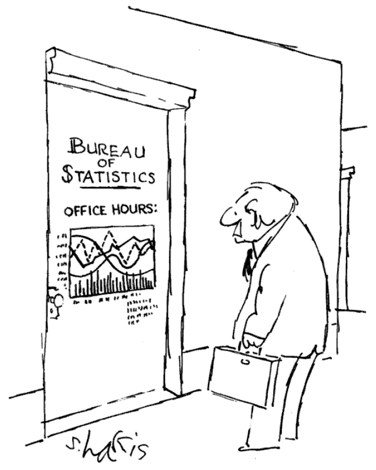
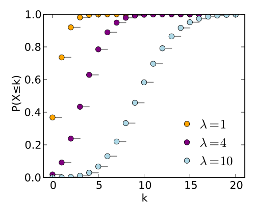

2013-01-25-Intro
Table of Contents
- 1 Data Mining i290
- 2 Course Goals
- 3 We'll Do Stuff
- 4 But Don't Worry
- 5 This is a Graduate class
- 6 Prerequisites
- 7 Material
- 8 Lectures & Labs
- 9 Office Hours
- 10 Questions?
- 11 Schedule
- 12 Hi, I'm Jim Blomo
- 13 Hi, I'm Shreyas
- 14 Data is Important
- 15 Data is Important
- 16 Data Mining ecosystem
- 17 Process
- 18 Break
1 Data Mining i290
- Jim Blomo & Shreyas
2 Course Goals
- Extract information from data
- Understand techniques to find patterns
- Apply algorithms to real data sets
3 We'll Do Stuff
- 30%: 10 Homework Assignments
- 30%: 1 Midterm
- 40%: 1 Project: Find, Mine, Report on Data
3.1 Homework Details notes
- HW due at midnight Thursday before class
- Each 24 hours late is 10% off
- HW will be turned in by GitHub pull request
- Project will be submitted by email & presentation
4 But Don't Worry
- This isn't a programming class
- Grades are based on understanding of the concepts, not the craziest project
- Shreyas & I are here to help
4.1 Help notes
- We realize there's a wide range of technical skill
- We will help get anyone up to speed in these technical areas
5 This is a Graduate class
- Perform well without supervision
- Readings from both book and online documentation
- TMTOWTDI
- Getting frameworks working on your computer
5.1 Style notes
- More firehouse than spoon feed, you'll need to follow up for understanding
- Honor system: No copying code or answers. Helping each other with concepts is encouraged, but document it.
- Everybody has a different workflow. We'll be covering the most basic. Great if you want to do something different, but realize we may not be able to help you as much.
- Non ISchool students should email student ID from EDU account to shreyas and jblomo and we will get them ischool accounts.
- You may want to use other frameworks for your projects. Great! But again, we may not be familiar with them
6 Prerequisites
- Basic probability: P(A), P(A or B), P(A and B), P(A | B)
- Basic programming: Python
- Basic command line: SSH, downloading, copying large files, running programs against data
- Textbook: Han, J., Kamber, M., & Pei, J. (2011). Data Mining: Concepts and Techniques, Third Edition (3rd ed.). Morgan Kaufmann.
- Technology will be available on
ischool.berkeley.edu
6.1 Basics notes
- "Probability of A", "Probability of A or B" "A and B" "A given B"
- Most assignments filling in algorithm code
- Project you may use any language, though we suggest Python.
- We'll introduce any specific frameworks
- Command line: cp, mv, less… Imagine you have a 10G file, how are you going to inspect the contents?
7 Material
- Process: from find data to mining it to visualizing results
- Algorithms: all intuitively motivated, some rigorously studied
- Programming: using algorithms against data sets
- Discovery: finding information in self-defined project
7.1 What will we learn? notes
- Data mining not just about algorithms. We'll learn how to obtain, clean, and store data.
- In real life, this is 70% of the job!
- We'll cover many different algorithms, and dive in depth on several of them. But we're not going to get into any hairy math proofs
- Programming is the best way to precisely describe an algorithm. It is also the way data mining is used in the real world.
- Your own project should emphasize your passion. Again, real world requires you to grab data and squeeze information out of it without external help
8 Lectures & Labs
- Start with Q&A for at least 10 minutes
- Expect to be asked a question
- Breaks
- Lab: Stick around and get the first question of HW done
- Slides on http://jblomo.github.com/datamining290/
8.1 Helpful tips notes
- Helpful to me if you say your name
- Sorry, I tend to forget names
- If I am not calling on you, check to make sure you are on the class list!
- I'm not taking attendance, but let me know if you can't make it so I won't call on you
9 Office Hours two_col
- We'll stay after class
- or schedule a Skype call
- Piazza for questions and announcements
- Wait list will be processed normally until 3rd week… then I'll accept everyone who's participated in class if we have physical room

9.1 Details notes
- I expect that everyone will be able to get into the class
- img src: http://statweb.calpoly.edu/srein/
10 Questions?
11 Schedule
Available at GitHub Syllabus page
- Jan 25 Class Intro ; Tools Intro by GUEST: Shreyas
- lab: Git Intro
- Feb 1 Case Studies ; Obtaining Data
- Feb 8 Probability ; Preprocessing
- Feb 15 MapReduce, Data Warehouse
- Feb 22 Decision Trees; Naive Bayes
- Mar 1 SVM ; Neural Networks
- Mar 8 Clustering ; Review
- lab: Project Proposal Due
- Mar 15 Midterm
- lab: -
- Mar 21 Dimensionality Curse ; Graph Mining
- Mar 29 HOLIDAY
- Apr 5 Pattern ; Evaluations
- Apr 12 Collaborative Filtering; PageRank
- Apr 19 Feature Extraction ; Evaluation
- Apr 26 Images ; Audio
- May 3 Visualization ; HTML
- May 10 In Real Life ; Review
- lab: -
- May 17 Final Presentation
- lab: Bye!
12 Hi, I'm Jim Blomo two_col
- Cal EECS
- A9 - Amazon Search
- PBworks
- Yelp
- Lecturer
13 Hi, I'm Shreyas
- First year Grad Student (MIMS '14)
- Also TA'd Analyzing Big Data class
- I can be reached at
seekshreyas@gmail.com
14 Data is Important
- Making decisions is a core part of humanity
- Data can help you make better decisions
- Challenge: extract information from data to improve decisions
14.1 Decisions notes
- From big to small; from planning to execution
- Business questions: what is the ROI of this feature? Where to concentrate development?
- Personal questions: Where to eat dinner tonight? What movie to see?
- Improving decisions means improving quality of life
15 Data is Important center
15.1 Nice example of data mining notes
- Stop at 3:51
- Had to work with external parties to get data (Yelp, city of Seattle)
- Had to clean data (literally, sometimes he was just handed paper receipts)
- Used regression analysis to discover patterns
- created follow up questions
- Used result to understand the meaning behind the data
16 Data Mining ecosystem
- Data mining is part of a process to make decisions from data
- Intersection between statistics, computer science, data management, machine learning
- Analysis & visualization often required
16.1 Ecosystem notes
- We'll talk about several ways to think about the process from data to knowledge
- No universally agreed process, or black-and-white boundaries
- Analysis: used at the beginning of investigations to understand data characteristics
- Visualization: better understanding of the results of analysis or data mining
16.2 Analysis vs. Data Mining two_col
- Analysis: manually investigating data. No algorithms.
- Statistical qualities: mean, median, standard deviation
- Histograms (manually set buckets)
- Counts / Percentages
- Data Mining: discovering patterns though automated algorithms
- Regressions: fitting data to a model
- Clustering: grouping data without manually set descriptions
- Classification: identifying divisive features
16.2.1 Pedantic notes
- Difference is subtle, but important for both the project and your resume
16.3 Machine Learning two_col
- Programs that can learn from data
- Focus on prediction, based on verified training data
- Used in two ways: during DM, after DM

16.3.1 Uses notes
- During
- assume we have training data, train on it, see how useful trained program is or find outliers
- After
- Discover clusters, verify and label clusters. Use labelled clusters to train a program to recognize new data points
16.4 Probability & Statistics two_col

- Data describes real world events
- Probability can describe real world expected events
- Distributions can be used to summarize data, understand the factors behind its creation
16.4.1 Uses notes
- Can "fit" data to a distribution, find outliers that are unexpected
- An example: Poisson distribution describes the expectation of a particular
number of events occurring.
- Eg. pieces of mail. average is 4, but it can vary. Is getting 7 or more pieces of mail really an outlier?
17 Process two_col
- Knowledge Discovery in Databases (KDD)
- Selection
- Pre-processing
- Transformation
- Data Mining
- Interpretation/Evaluation
- Cross Industry Standard Process for Data Mining
- Business Understanding
- Data Understanding
- Data Preparation
- Modeling
- Evaluation
- Deployment
17.1 Common Themes notes
- Figure out what you want to do
- Get the data
- Make sure it's OK
- Understanding
- Make a decision, test its effectiveness
- Reading will cover another process, aimed at "Data Science", but basically applies to Data Mining